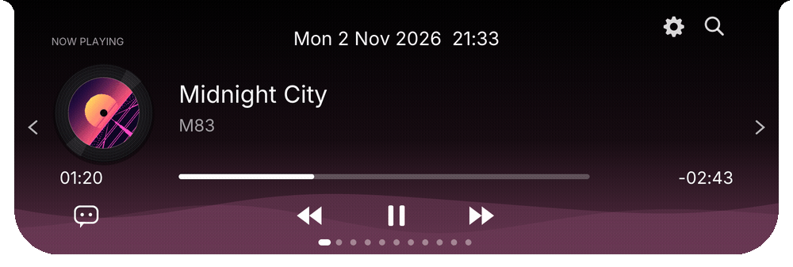
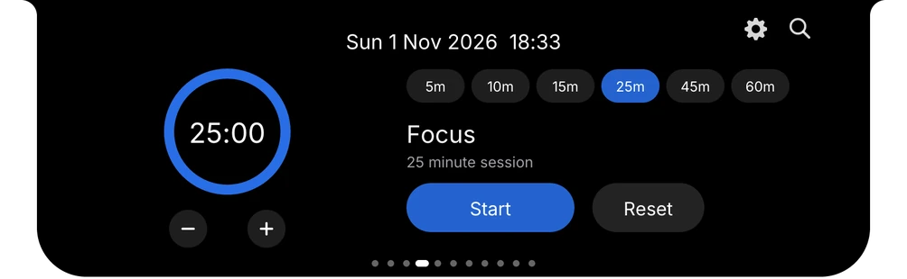

Now playing
Cover, progress, lyrics, volume and media controls for whatever is playing on your machine.


Idle: battery and time
Windows & Linux · free · native
Visus lives at the top of your screen as a small, quiet pill. Hover, and it opens into music, timers, notes, your clipboard and more. Look away, and it falls asleep.
Dynamic by design
Idle, Visus is just your battery and the time. Play a song and the pill widens to make room for a live visualiser. Start a download and a speed readout slides in. Plug in the charger and it greets you with a face.

Game mode
Visus notices when a game takes the screen and turns into a quiet row of live readings: CPU and GPU load, temperatures, memory. No overlay to set up. When you quit, it goes back to being a clock.
Shows the readings your machine exposes: GPU stats need an NVIDIA card (AMD on Linux), CPU temperature is available on Linux.
Music
Whatever is playing, Visus picks up the title, artist and cover, spins it on a vinyl, and tints the whole interface with the colour of the artwork. Synced lyrics, seeking and media keys are built in.

A closer look
Scroll through the pages with the wheel or the arrow keys. These are captured straight from the app.

Everything in reach
Cover, progress, lyrics, volume and media controls for whatever is playing on your machine.
Start a countdown and a ring appears on the pill. It nudges you when time is up.
Search apps, switch to ones already running, jump between windows, open files with fm.
Capture a thought in a second. Add @18:00 to a task and it reminds you.
Everything you copied recently, one click away, kept only on your device.
Paste an ICS link and upcoming meetings show up, with a heads-up before they start.
Drop files onto the pill to park them while you work, then drag them out where you need them.
Charging, low battery, headphones, controllers, downloads: each gets its own little reaction.
CPU, memory, network speed and weather without opening a single window.
Make it yours
Pick a clock, pick an eye, and let the pill match your setup.
Free. No account. Small enough to forget it is running.
Windows 10/11 · Linux (Wayland & X11). Windows may show a SmartScreen notice because the app is not code-signed yet; choose “More info”, then “Run anyway”.